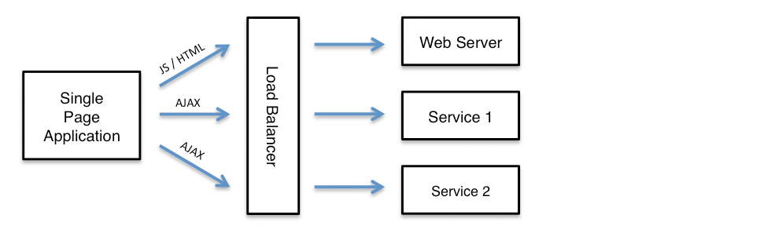
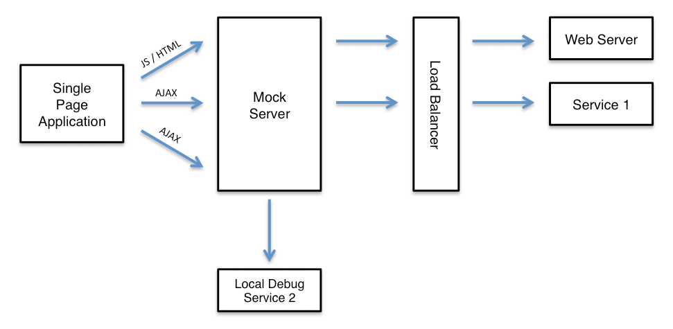

During deployment and debugging it can be helpful to run a single application or service or handle a sub-set of requests on a local machine in debug mode. Using MockServer it is easy to selectively forward requests to a local process running in debug mode, all other request can be forwarded to the real services for example running in a QA or UAT environment.
For example a single page application may load static resources such as HTML, CSS and JavaScript from a web server and also make AJAX calls to one or more separate services, as follows:

To isolate a single AJAX service, for development or debugging, the MockServer can selectively forward specific requests to a local instance of the service:

One of the simplest ways to do this is using Node.js. In the example below all requests matching path "/rest.*" (i.e. starting with /rest) will go to the local machine on port 8080 whereas all other requests will go to a remote machine (i.e. a load balancer or remote server) on ip 192.168.50.10 and port 443.
First create a package.json file as follows:
{
"name": "mockserver_as_reverse_proxy",
"version": "1.0.0",
"main": "server.js",
"dependencies": {
"mockserver-node": "{{ site.mockserver_version }}",
"mockserver-client": "{{ site.mockserver_version }}"
}
}Then create the server.js file that starts (and cleanly stops) an embedded MockServer, and creates the two forwarding expectations, as follows:
var mockserver = require('mockserver-node');
var mockServerClient = require('mockserver-client').mockServerClient;
var HTTP_PORT = 1080;
mockserver
.start_mockserver({
serverPort: HTTP_PORT
})
.then(function () {
// now create the two forwarding expectations (see the client examples below)
console.log("started on port: " + HTTP_PORT);
});
// stop MockServer if Node exist abnormally
process.on('uncaughtException', function (err) {
console.log('uncaught exception - stopping node server: ' + JSON.stringify(err));
mockserver.stop_mockserver();
throw err;
});
// stop MockServer if Node exits normally
process.on('exit', function () {
console.log('exit - stopping node server');
mockserver.stop_mockserver();
});
// stop MockServer when Ctrl-C is used
process.on('SIGINT', function () {
console.log('SIGINT - stopping node server');
mockserver.stop_mockserver();
process.exit(0);
});
// stop MockServer when a kill shell command is used
process.on('SIGTERM', function () {
console.log('SIGTERM - stopping node server');
mockserver.stop_mockserver();
process.exit(0);
});Starting and stopping an embedded MockServer this way is specific to Node.js (using the mockserver-node package). The forwarding rules themselves — two httpForward expectations — are just regular expectations, so they can be created from any MockServer client against a running MockServer. Both route by request path: requests matching "/rest.*" are forwarded to the local debug instance on 127.0.0.1:8080 over HTTP, and all other requests (matching "/.*") are forwarded to the QA load balancer on 192.168.50.10:443 over HTTPS:
MockServerClient client = new MockServerClient("localhost", 1080);
// forward backend REST API request to local machine
client
.when(
request()
.withPath("/rest.*")
)
.forward(
forward()
.withHost("127.0.0.1")
.withPort(8080)
.withScheme(HttpForward.Scheme.HTTP)
);
// forward all other requests to QA environment
client
.when(
request()
.withPath("/.*")
)
.forward(
forward()
.withHost("192.168.50.10")
.withPort(443)
.withScheme(HttpForward.Scheme.HTTPS)
);var mockServerClient = require('mockserver-client').mockServerClient;
var client = mockServerClient("localhost", 1080);
// forward backend REST API request to local machine
client.mockAnyResponse({
"httpRequest": {
"path": "/rest.*"
},
"httpForward": {
"host": "127.0.0.1",
"port": 8080,
"scheme": "HTTP"
},
"times": {
"unlimited": true
}
}).then(
function () {
// forward all other requests to QA environment
client.mockAnyResponse({
"httpRequest": {
"path": "/.*"
},
"httpForward": {
"host": "192.168.50.10",
"port": 443,
"scheme": "HTTPS"
},
"times": {
"unlimited": true
}
});
},
function (error) {
console.log(error);
}
);See REST API for full JSON specification
from mockserver.client import MockServerClient
from mockserver.models import HttpForward, HttpRequest
client = MockServerClient("localhost", 1080)
# forward backend REST API request to local machine
client.when(
HttpRequest.request("/rest.*")
).forward(
HttpForward(host="127.0.0.1", port=8080, scheme="HTTP")
)
# forward all other requests to QA environment
client.when(
HttpRequest.request("/.*")
).forward(
HttpForward(host="192.168.50.10", port=443, scheme="HTTPS")
)require 'mockserver-client'
client = MockServer::Client.new('localhost', 1080)
# forward backend REST API request to local machine
client.when(
MockServer::HttpRequest.new(path: '/rest.*')
).forward(
MockServer::HttpForward.new(host: '127.0.0.1', port: 8080, scheme: 'HTTP')
)
# forward all other requests to QA environment
client.when(
MockServer::HttpRequest.new(path: '/.*')
).forward(
MockServer::HttpForward.new(host: '192.168.50.10', port: 443, scheme: 'HTTPS')
)import mockserver "github.com/mock-server/mockserver-monorepo/mockserver-client-go/v9"
client := mockserver.New("localhost", 1080)
// forward backend REST API request to local machine
client.When(
mockserver.Request().Path("/rest.*"),
).Forward(
mockserver.Forward().Host("127.0.0.1").Port(8080).Scheme("HTTP"),
)
// forward all other requests to QA environment
client.When(
mockserver.Request().Path("/.*"),
).Forward(
mockserver.Forward().Host("192.168.50.10").Port(443).Scheme("HTTPS"),
)using MockServer.Client;
using MockServer.Client.Models;
using var client = new MockServerClient("localhost", 1080);
// forward backend REST API request to local machine
client.When(
HttpRequest.Request().WithPath("/rest.*")
).Forward(
HttpForward.Forward().WithHost("127.0.0.1").WithPort(8080).WithScheme("HTTP")
);
// forward all other requests to QA environment
client.When(
HttpRequest.Request().WithPath("/.*")
).Forward(
HttpForward.Forward().WithHost("192.168.50.10").WithPort(443).WithScheme("HTTPS")
);use mockserver_client::{ClientBuilder, HttpRequest, HttpForward};
let client = ClientBuilder::new("localhost", 1080).build().unwrap();
// forward backend REST API request to local machine
client.when(HttpRequest::new().path("/rest.*"))
.forward(HttpForward::new("127.0.0.1", 8080).scheme("HTTP"))
.unwrap();
// forward all other requests to QA environment
client.when(HttpRequest::new().path("/.*"))
.forward(HttpForward::new("192.168.50.10", 443).scheme("HTTPS"))
.unwrap();use MockServer\MockServerClient;
use MockServer\HttpRequest;
use MockServer\HttpForward;
$client = new MockServerClient('localhost', 1080);
// forward backend REST API request to local machine
$client->when(
HttpRequest::request()
->path('/rest.*')
)->forward(
HttpForward::forward()
->host('127.0.0.1')
->port(8080)
->scheme('HTTP')
);
// forward all other requests to QA environment
$client->when(
HttpRequest::request()
->path('/.*')
)->forward(
HttpForward::forward()
->host('192.168.50.10')
->port(443)
->scheme('HTTPS')
);# forward backend REST API request to local machine
curl -v -X PUT "http://localhost:1080/mockserver/expectation" -d '{
"httpRequest": {
"path": "/rest.*"
},
"httpForward": {
"host": "127.0.0.1",
"port": 8080,
"scheme": "HTTP"
},
"times": {
"unlimited": true
}
}'
# forward all other requests to QA environment
curl -v -X PUT "http://localhost:1080/mockserver/expectation" -d '{
"httpRequest": {
"path": "/.*"
},
"httpForward": {
"host": "192.168.50.10",
"port": 443,
"scheme": "HTTPS"
},
"times": {
"unlimited": true
}
}'See REST API for full JSON specification
To start the Node.js process install the npm module and launch Node.js, as follows:
npm i
node server.jsThe example above isolates a service by writing an explicit httpForward expectation per route. When you instead want unmatched routes to fall through to the real upstream automatically — without defining a catch-all forward expectation — switch MockServer into one of the operating modes below: in SPY or CAPTURE mode any request that matches no expectation is forwarded to the real service and recorded, so you only need to write expectations for the calls you want to override locally.
MockServer supports three operating modes that control how unmatched requests are handled. Switch between them at runtime without restarting the server.
| Mode | Matched requests | Unmatched requests | Use case |
|---|---|---|---|
| SIMULATE | Return mock response | Return 404 (default) | Pure mock — test against a fully controlled set of expectations |
| SPY | Return mock response | Forward to real upstream & record | Selective mocking — stub specific calls, pass the rest through to a real service |
| CAPTURE | Return mock response | Forward to real upstream & record | Traffic capture — no expectations needed; record all real traffic for later replay |
SIMULATE is the default. SPY and CAPTURE are behaviourally identical — both enable the same proxy-on-no-match behaviour (matched requests return their mock; unmatched requests are forwarded to the real upstream and recorded), so the distinction between them is one of intent only, not of runtime behaviour. (Internally they share the same flag, so the server reports either as SPY.) Use SPY when you have expectations for some calls and want to pass the rest through; use CAPTURE when you want to record all traffic first, typically with no expectations defined.
Recorded interactions are retrieved via the existing retrieve endpoints — for example PUT /mockserver/retrieve?type=RECORDED_EXPECTATIONS returns the recorded traffic as expectations ready for replay. See Retrieving Recorded Expectations for details.
import org.mockserver.client.MockServerClient;
import org.mockserver.mock.MockMode;
// switch mode by passing MockMode.SPY, MockMode.CAPTURE or MockMode.SIMULATE
new MockServerClient("localhost", 1080)
.setMode(MockMode.SPY);var mockServerClient = require('mockserver-client').mockServerClient;
var MockMode = require('mockserver-client').MockMode;
// switch mode by passing MockMode.SPY, MockMode.CAPTURE or MockMode.SIMULATE
// (the equivalent "SPY"/"CAPTURE"/"SIMULATE" strings are accepted too)
mockServerClient("localhost", 1080)
.setMode(MockMode.SPY)
.then(function () {
console.log("operating mode set");
});from mockserver.client import MockServerClient
from mockserver.models import MockMode
# switch mode by passing MockMode.SPY, MockMode.CAPTURE or MockMode.SIMULATE
client = MockServerClient("localhost", 1080)
client.set_mode(MockMode.SPY)require 'mockserver-client'
# switch mode with the MODE_SPY / MODE_CAPTURE / MODE_SIMULATE constants
# (the :spy / :capture / :simulate symbols are accepted too)
client = MockServer::Client.new('localhost', 1080)
client.set_mode(MockServer::Client::MODE_SPY)import mockserver "github.com/mock-server/mockserver-monorepo/mockserver-client-go/v9"
// switch mode by passing mockserver.ModeSpy, mockserver.ModeCapture or mockserver.ModeSimulate
client := mockserver.New("localhost", 1080)
client.SetMode(mockserver.ModeSpy)using MockServer.Client;
using MockServer.Client.Models;
// switch mode by passing MockMode.Spy, MockMode.Capture or MockMode.Simulate
using var client = new MockServerClient("localhost", 1080);
client.SetMode(MockMode.Spy);use mockserver_client::{ClientBuilder, MockMode};
// switch mode by passing MockMode::Spy, MockMode::Capture or MockMode::Simulate
let client = ClientBuilder::new("localhost", 1080).build().unwrap();
client.set_mode(MockMode::Spy).unwrap();use MockServer\MockServerClient;
// switch mode with the MODE_SPY / MODE_CAPTURE / MODE_SIMULATE constants
$client = new MockServerClient('localhost', 1080);
$client->setMode(MockServerClient::MODE_SPY);curl -v -X PUT "http://localhost:1080/mockserver/mode?mode=SPY"curl -v -X PUT "http://localhost:1080/mockserver/mode?mode=CAPTURE"curl -v -X PUT "http://localhost:1080/mockserver/mode?mode=SIMULATE"Query the current mode at any time:
curl -s "http://localhost:1080/mockserver/mode"Response:
{
"mode": "SPY",
"proxyUnmatchedRequests": true
}The proxyUnmatchedRequests field reflects whether unmatched requests will be forwarded (true for SPY and CAPTURE, false for SIMULATE).